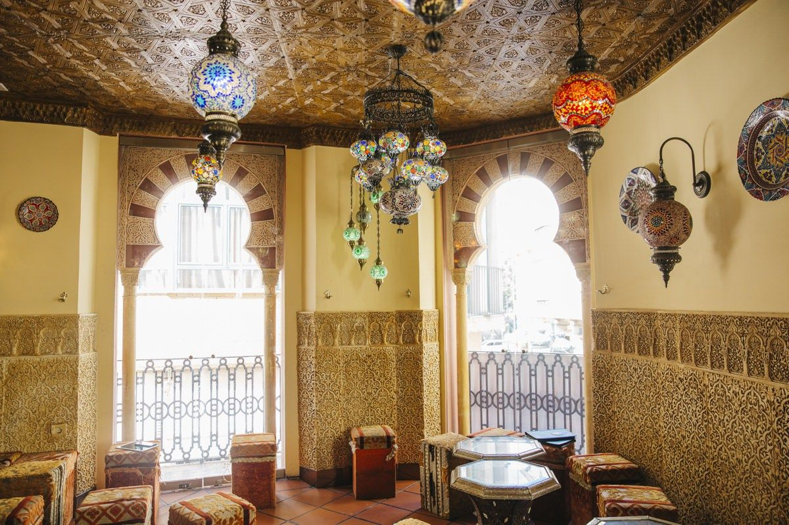

Somos Mari y Gerardo, nos dedicamos a este rubro hace 2 años aproximadamente, nuestras comidas
son
recetas pura y exclusivamente arabes ya que provienen de Toya, nuestra tia, que en paz descanse,
quien nos enseño como armar y preparar las comidas mas ricas de Siria.
Nuestra comida mas especial es la empanada arabe, conocida como SFIJA, esperamos que puedas
disfrutar de tu comida!